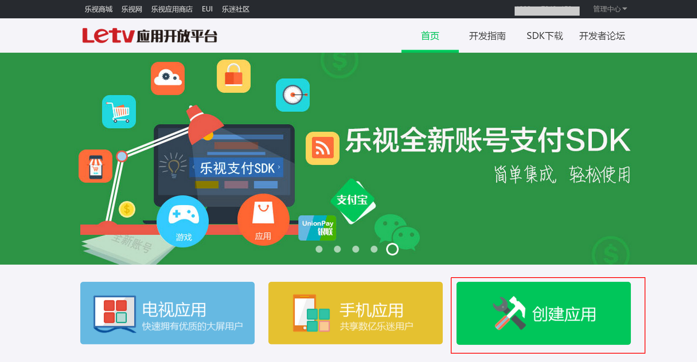
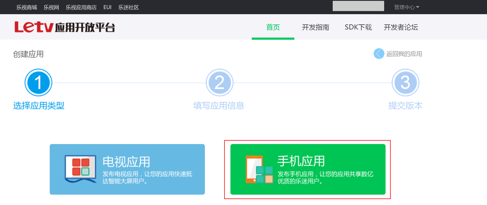
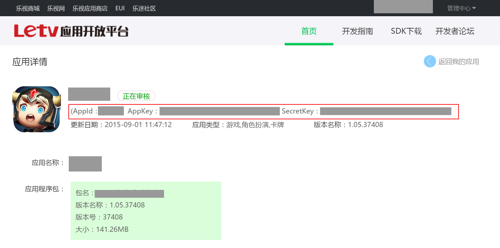

乐视官方后台地址：http://dev.gfan.com/
西瓜SDK所需的参数AppId、AppKey、SerectKey均在乐视后台获取。
获取参数步骤：1. 注册开发者账号；
2. 登录乐视渠道后台，点击“创建应用”；

3. 选择“手机应用”；

4. 填写应用信息，点击“保存，下一步” ；
5. 获取到的AppId、AppKey、SerectKey如下所示；

6. 游戏在渠道有如下几种状态：待提交、正在审核和已上架；已上架则证明游戏已上线。